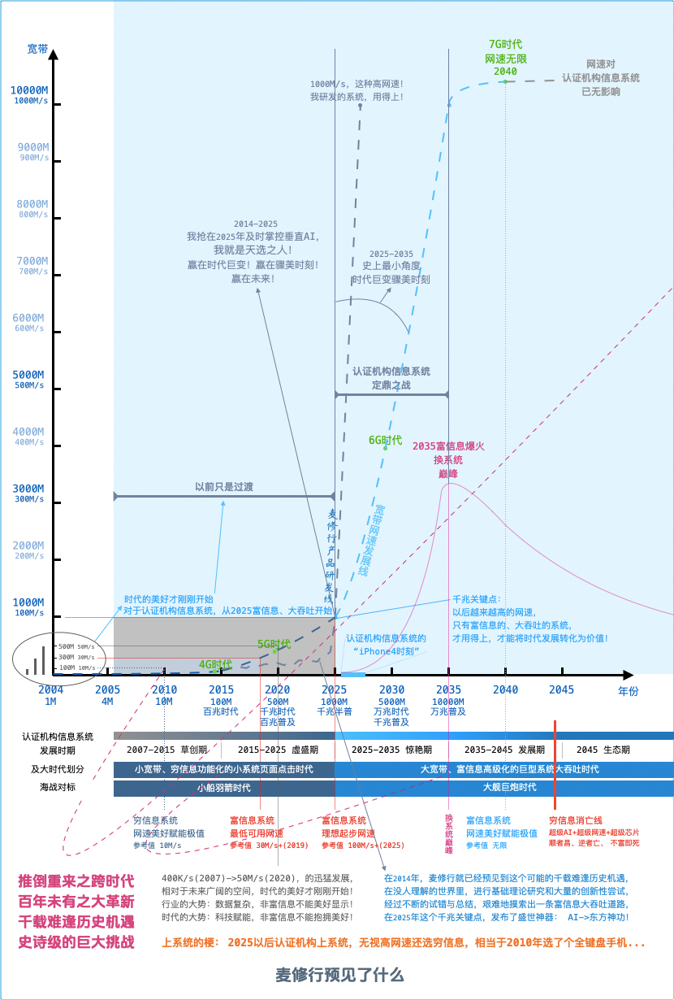
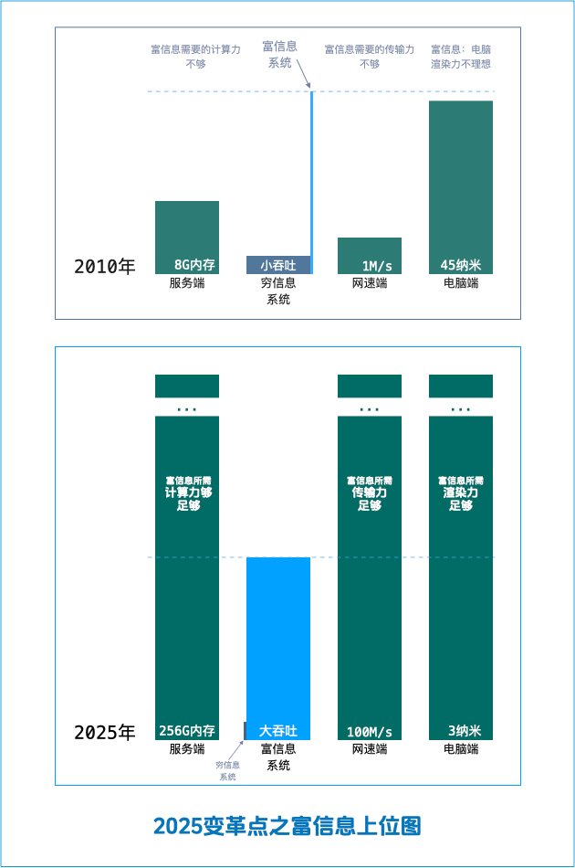
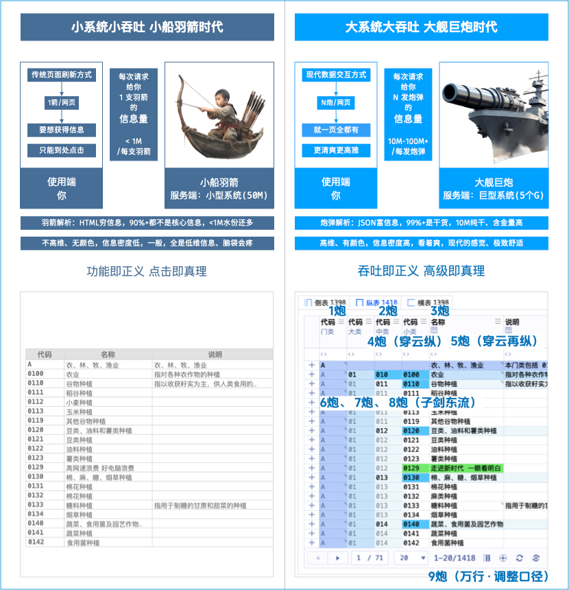
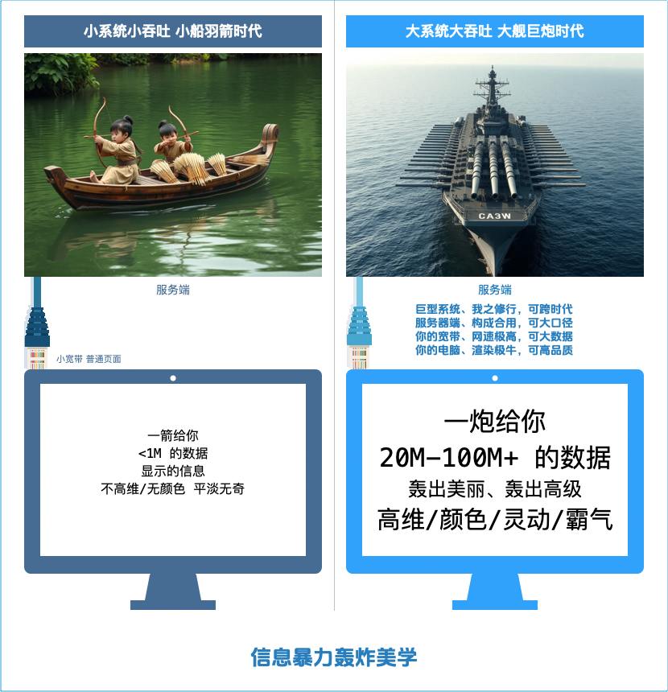

麦修行
麦修行：我以高认知提前十年精准预判到行业的变革点，我要造盛世神器，我以修行之心，预见之、深耕之
我麦（深耕、卖）的修行是：在时代巨变的这个浪潮中，跨时代用上与时代匹配的富信息、大吞吐巨型系统
麦修行深耕了什么
十余年研究一件事：专门针对认证机构信息系统这个行业、即将到来的大宽带变革，进行专项特别研究：
《专门针对认证机构信息系统的现代富信息、大吞吐系统基础理论研究》
《专门针对认证机构信息系统的高级功能体系设计及武侠文化映射研究》
《专门针对认证机构信息系统的垂直AI编程研究》
《专门针对认证机构信息系统的大模型设计及符文系统研究》
《专门针对认证机构信息系统的宋乔美学研究》
《专门针对认证机构信息系统的大合用资源整合方法研究》
《专门针对认证机构信息系统的大合用资源分配算法研究》
2014-2025，自己修完七门课程，修成“无证野博”，自封“系统学博士”，我要干一件大事：引领行业跨时代
以前：认证机构上系统，什么这个ERP、 什么那个二次开发，还有本来是做别的系统的、顺带手的给你做做
以后：上系统可以找我：毕竟我自修过专业课程，专做这个！我的梦想是通过我的努力，改变这个小的世界
麦修行预见了什么
我在2014年：
预见到了富信息、大吞吐，预见到了“时代巨变骤美时刻”！我抢在2025年及时掌控垂直AI，我就是天选之人！
以前只是过渡，真正的系统才刚刚开始，定鼎之战在2025-2035：赢在时代巨变！赢在骤美时刻！赢在未来！
预判时代巨变，提前摸索系统的终极形态，
缔造盛世神器，然后等待认证机构来使用！
从2014年开始，修行之心默默深耕十余年，
为的是能够帮助认证机构极速跨入新时代！
深耕细作，要随时等待着认证机构的召唤，
如有召唤，共谋时代红利，同向高端品质！

按以往的认知来讲，宽带发展对于认证机构信息系统，并不会有什么太大影响，但凡事都有一个质变临界点
如果达到了临界点，系统的底层逻辑将会被彻底重构，系统会发生根本性变革，宽带对系统产生颠覆性影响
这个极限临界点是：千兆网络普及+现代芯片的发展
先要科普一个知识：穷信息设计与富信息设计的区别
| 技术方向 | 使用效果 | 开发成本 | 对高网速要求 | 对好电脑要求 |
|---|---|---|---|---|
| 穷信息设计 | 不好 | 低 | 否 | 否 |
| 富信息设计 | 更好 | 极高 | 是（千兆网络以传输大数据） | 是（现代芯片以渲染大数据） |
复制下行，自问 AI ：
假如要做认证机构信息管理系统，富信息与穷信息，哪个好？为什么？我网速极高、电脑极好，用哪种好
天下AI都会替我说话、会告诉你：我说的对，用富信息很完美，更适合认证业务的特殊性，你应该换系统
根本性变革在哪里：
| 时间 | 条件 | 玩法 | 本质 | 动作 | 表象 |
|---|---|---|---|---|---|
| 常规 | 网速一般、电脑一般 | 普通页面 | 小于1M的页面 | 点击页面 | 低维、手动、烧脑 |
| 变革 | 网速极高、电脑极好 | 高品质信息 | 20M-100M+的数据 | 交互大数据 | 高维、灵动、烧CPU |
通俗的讲，怎么理解：
假定这样一个场景：你和系统能够对话，那你应该这样告诉系统（允悲）：
😭😭😭😭😭😭😭😭😭😭😭😭😭😭😭😭😭😭😭😭😭😭😭😭😭😭😭😭😭😭😭😭😭😭😭😭
😭哥（系统），我现在网速极高，请不要弄些小表，让我点来点去的，请一次性的给我传来100M的数据😭
😭我现在电脑超牛，请把那100M的数据给我渲染成高密度的高维信息，让我不用烧脑去想，直接看明白😭
😭如果你的系统还1M、1M的给你低密低维信息，那你网速的豪情、你电脑的神威，都被这个系统辜负了😭
😭😭😭😭😭😭😭😭😭😭😭😭😭😭😭😭😭😭😭😭😭😭😭😭😭😭😭😭😭😭😭😭😭😭😭😭
无论是我告诉你、还是你自己去问AI， 铁定的趋势是：网速已经极高、电脑也极好，富信息系统一定更适合
2025年千兆普及，标志着穷信息没落，富信息将崛起，认证机构对信息系统的选择，很快会发生革命性转向
错的选择、错的方向：穷信息❌、小页面❌（信息密度低❌），选了个淘汰品
对的选择、对的方向：富信息✅、大吞吐✅（信息密度高✅），选对了大趋势
2014年，未来是否构成富信息的使用条件，那时候还不能给出肯定回答，现在、2025，一切都非常的明朗了
不管你是否用我设计的系统，自己做也好、找别人做也好，总之：最佳选择的大方向一定是：富信息+大吞吐
上系统的梗：2025以后认证机构上系统，无视高网速还选穷信息，相当于2010年选了个全键盘手机...
对于大宽带引发的、关于认证机构信息系统的这次变革、2025以后的这个形式，麦修行有句名言：
时代美好共一石，网速欲给你十石，电脑欲给你百石，若系统不济，你只得半斗、很小很小的小半斗。
我以我的理解，对认证机构信息系统的发展，进行了时代与时期的划分：
小宽带、穷信息功能化的小系统页面点击时代（小船羽箭时代）
穷信息设计、富信息设计，这词不是我发明的，设计上的术语，很多年前本来就有！并不是穷信息设计不好
相反，穷信息设计还真就是那个时代的最优解，在资源环境上，富信息条件不具备，所以是有且只有穷信息
2007-2015 草创期
从无到有的初创阶段
2015-2025 虚盛期
什么叫作「虚盛」？
以手机的发展为例：在2000年到2010年的十年里，无论多么用心、多么努力、多么优秀、一时间多么的强盛
2010年，iPhone 4 横空出世！对行业具有颠覆性， 真正的好东西会非常快的把曾经的一切都丢进历史垃圾堆
行业的真正变革点还没有到，系统终极形态还没有确定，这个时期强盛都是虚的，一切强盛在变革点都会归零
这个时候你投入再大的精力，把系统的各个链接、各个表格、各个点击都做完美，将来看了东方神功必然沉默
大宽带、富信息高级化的巨型系统大吞吐时代（大舰巨炮时代）
真正的变革点出现，系统终极形态确定：富信息、大吞吐，充分利用现代环境，能够将时代美好转化成生产力
以后比系统拼的是：谁的信息密度更高、维度高、有颜色、一眼看明白不头疼，谁对大数据有更好的驾驭能力
通俗易懂的理解变革点：
- 服务端突破临界点：计算力够
- 网速端突破临界点：传输力够
- 电脑端突破临界点：渲染力够
时代巨变，三力俱至，引发变革！终极形态确定，长期经典即将现世：认证机构信息系统的“iPhone4时刻”来临

2025，服务端、服务器，可以轻松达到256G内存、甚至更多，我说的是内存，不是硬盘，你细品品这啥条件👍🏻
2025，网速能达到100M/s、而且即将普及，以后还会越来越高、用不了几年还会翻十倍，你细品品这啥条件👍🏻
2025，电脑也比以前厉害太多了，不再是45纳米、不再是32纳米，是3纳米、很快1纳米，你细品品这啥条件👍🏻
2025，富信息上位，穷信息渐渐退出历史舞台，这是必然趋势！系统渐渐呈现本该有的感觉：真正的驾驭数据
对于认证机构，如果把上系统比作填空题，2010年，填富信息是错的，因为环境条件不允许，也只能填穷信息
但是，2025年及以后，上系统还填穷信息，那可不是环境条件不允许，聪明人应该填富信息，不浪费时代助力
系统是每天都要看的，服务端、网速端、电脑端这些极好的时代环境，就相当于你已经住进了大平层、大别墅：
还用穷信息系统：相当于居豪宅而节衣缩食、过度节俭，省了点钱、浪费的只怕是价值更大...
用上富信息系统：相当于居豪宅且衣着华丽、四菜一汤，心情愉悦、赢得了这个巨变的时代...
认证机构不乏有识之士，会意识到时代的变化，顺应时代发展，抓住时代红利，借助时代之力，提升工作品质
“莫非你自己都不知道：自己现在有多高的网速吗？自己的电脑芯片现在有多大的渲染力吗？”
“你的网速、电脑芯片，其实都给了你天大的本事，可惜受系统羁绊，天大本事不能施展也！”
2025-2035，这突如其来的时代红利，如何才能真真正正抓住，这是一个巨大挑战，更是千载难逢的历史机遇
2025-2035 惊艳期
什么叫作「惊艳」？
对于「认证机构信息管理系统」这个行业，未来的趋势是：网速的传输力是重量级、电脑的渲染力也是重量级
那么对于系统来讲：数据的显示力也应该是重量级 —— 系统必须和时代环境相匹配，这才是未来发展的大趋势
好系统原理：利用高网速，服务端向使用端传递大数据，利用好电脑，将传来的大数据渲染出高密度高维信息
所谓惊艳：不过是小数据、粗劣渲染的低密度低维信息、轻量级系统，突然换成重量级系统所带来的超时代感
网速就好比高速公路连到你家门口，电脑就好比专用车库建到你家傍边，你从自行车换成小轿车，自然惊艳了
高网速来了，好电脑来了，你什么时候从适配 200kb/s 的系统，换成适配 千兆万兆 的系统， 就会感到惊艳了
2035-2045 发展期
不断升级的发展阶段
2045 生态期
经过了二十年的发展和积累，大模型、符文库都已经非常的成熟，跨时代发展阶段结束，进入生态期发展阶段
下面说说图中关键断语是什么意思：
推倒重来之跨时代
推倒重来
任何穷信息、小吞吐的系统，要想弄成富信息、大吞吐的系统，原来的东西你都用不上了，必须全部推倒重来
智能手机和按键手机都叫手机，实际上都已经不是一个东西了，系统也是：数据库CURD套皮的游戏玩到头了
为什么局部富信息不行？
有且只有全面富信息，才能全面的信息聚合，高级功能体系才是体系
否则突来的高级给人的感觉就会特别的突兀，反而显得系统不伦不类
跨时代
跨越时代：从小船羽箭时代，跨到大舰巨炮时代
百年未有之大革新、千载难逢历史机遇
大革新
推翻原来的穷信息旧观念，建立全新的富信息新观念，关于二者区别，这里我简单例举普遍具有代表性的区别
| 项目 | 穷信息旧观念 | 富信息新观念 |
|---|---|---|
| 数据形态 | 表格数据 · 扁平数据 | 高维数据 · 立体关联 |
| 交互方式 | 点这点哪 · 静态操作 | 聚合灵动 · 交互设计 |
| 信息密度 | 简单显示 · 单一信息 | 复合显示 · 全景洞察 |
| 用户认知 | 被动接受 · 线性理解 | 主动探索 · 体系推演 |
| 系统进化 | 功能堆砌 · 版本冻结 | 细胞分裂 · 模块设计 |
没用过富信息的人，可能一时间会觉得非常抽象！难以理解！说的是什么？全都不明白！用你容易理解的方式
穷信息系统有点像简单信息管理的技术，现在就像造自行车一样简单，代码量一般不会超过100M
富信息系统有点像现代网页游戏的技术，永远都像造跑车一样非常难，代码量保守估计也要2个G
冷不丁看富信息系统，会感觉到明显不一样，最快认识富信息系统的途径是在各大平台关注我，看我发的视频
系统哲学，深度理解：
如果与时俱进，你该用的系统，
不应该是：1M/s网速也一样用，点着嗖嗖快、快的都冒烟
而应该是：1M/s网速都用不了，点着一般快、不影响使用
如果不与时俱进呢？会怎么样？
你现在的电脑装上XP得有多快，各种功能差不多还都能用
系统成为瓶颈，输掉整个时代，时代给你的美好你接不住
长时间的系统瓶颈，输掉时代：
这种事往往是后知后觉，需要十多年、甚至二十年才能懂
就像你图省钱不换手机，硬生生把全键盘手机按到了现在
百年未有、千载难逢，历史机遇
百年未有、千载难逢，历史机遇，意思就是有且只有这一次！以后再也不会有了，唯一的一次
认证信息系统这个行业，服务端->传输端->使用端，全部达到变革点引发的变革，只有这一次
2055年以后，对于认证机构信息系统而言，人们会认为网速是无限的
2025-2055年，这30年是史上网速对系统影响最大的一个特殊的时期
这30年，还用穷信息、小页面系统，浪费了时代
这30年，用上富信息、大吞吐系统，赢得了时代
到了2055年，AI会高度发达、编程技术进步，市面上就全是富信息、大吞吐系统了
到了2055年，今天的穷信息、小页面，就会像今天的DOS系统一样，再也没人用了
跨时代，正是跨的这个，提前让你用上：富信息、大吞吐系统，让2025-2055值得
两个道理：
只有一次：宽带发展引起的深度变革，就是小吞吐换大吞吐，再发展也只是更好的大吞吐
早晚得换：以后是宽带超高速发展期，眨眼之间用不了几年，穷信息系统就没人愿意点了
宽带的超高速发展，就会带动认证机构换富信息系统，预计2035年富信息爆火、换系统达到巅峰！
未来人们喜欢的是高级感、现代感，如果系统太落伍，会潜移默化的影响员工每一天的工作情绪！
比如上班工作是按手机，那么：今天给你个全键盘手机，让你每天按七八个小时，你会愿意按吗？
所以说你扛过2035，也早晚扛不住，尤其是周边科技的对比，长时间看低维表格，早晚看吐了🤮
只有一次 + 早晚得换 = 历史机遇：
对于认证机构，史上最值得换系统的时候到了！其他时间换系统一百次，都不如这个时候，换富信息系统一次
如果为了图省钱，用惯了还没流量费，你如果硬把全键盘手机按到2025，当你看懂时代，回头一望将满是遗憾
如果为了少花钱，本地部署还没年费，你如果硬把穷信息系统点到2055，当你看懂时代，回头一望将满是遗憾
时代何等美好，科技何等美好，云端何等美好，网速何等美好，电脑何等美好，生态何等美好，未来何等美好
为一个不到100兆的代码、还是加密的，然而一切美好，都要为此殉葬，我亲爱的朋友，你这么做真的值得吗
如果上云端、交年费，趁着春风刚来，早早发芽，十年之后全是云端、都交年费，曾经前卫过，便不会有秋凉
我曾经用过 iPhone 4 ，那你很前卫了 🤞
我曾经用过 cA3w 4 ，那你很前卫了 🤞
史诗级的巨大挑战
直至今天，就算用穷信息技术，能够把认证机构信息系统良好的做出来，依然是非常难的一件事，地狱级难度
如果充分利用大宽带时代优势，大吞吐得到大数据，在终端渲染富信息，毫无疑问：跨越了时代，史诗级美丽
希望能得到一些大机构的支持，如果能够提前用上富信息、大吞吐系统，跨时代享用真的是一件非常美好的事
我认为：我就是认证机构信息系统这个行业，跨时代的天选之人，我要肩负起这个时代使命，引领行业跨时代
凭什么我认为自己就是天选之人：
就凭我能在2014-2025年修出造化：AI->东方神功，我应该就是上天为这场变革选中的人，肩负革新重大使命
恰恰是因为2014年没有什么AI，我才能集中心神自己做个垂直AI，这就是造化
我经历的是香港武侠的黄金时期、在没有AI的岁月里才能够练就扎实的编程功底
在武侠熏陶下，以出色的基本功、加上我出色的创新能力，世上没有我才能做出
世上要有AI，我反而就做不出了：
今天这个AI很强大、那个AI已开源，即便是我，恐怕再难做出：AI->东方神功
因为可选择的太多！而且非常繁荣，我很难坚持住：挑战各种极限自己做一个AI
这个道理非常深奥：时代是进步了，现在的女人还会做针线活吗？这个你要细品
我的AI本事，就好比是做针线活：
如果你成天披树叶跑，那你媳妇或许会给你做衣服，即便是没什么手艺也得硬做
一年做不成还得继续，哪怕是三五年做不成还得做，针线活的手艺早晚能练出来
你这淘一个那拼一个，那你媳妇不可能给你做衣服，针线活的手艺也就练不出来
所以：2055年，AI->东方神功，依然是高端品质，这个神手艺怕是没人会去练
还有个问题是：行业非常小众市场太小，先机已失，迟迟入场练成市场早就没了
科技那么进步、公共AI那么多、各种条件都非常好，人们反而做不出好东西来了
你再看看我呢，在2014年那么艰苦的条件下，我反而却能做出：AI->东方神功
所以：我这个修行之人，我命里就有这个造化，我当然就是这个行业的天选之人！
我是天选之人：
2025以后，时代巨变，万物高级，穷信息渐成腐朽，富信息渐成大势，上为认证机构所重，下与我之修行相合
我以天命预见之，内修AI、外修神功.... 我以使命等待之，若启用我麦修行革新，必将化腐朽为神奇，天授异人
跨时代跨到哪：
我认为：代码量能达到5G，全面富信息、大吞吐的信息系统，要到2055年才会自然的产生，我要提前这个时间
我要运用我掌握的垂直AI，让2055年才会有的现代信息系统，早在2025年就跨时代的产生，并且成为一代经典
麦修行的帝国双璧
全面富信息、能够大吞吐，想和说都容易，真正的做到却非常难，所以要以战争的方式打赢这场技术底蕴攻坚战
我用了长达十余年的时间，打赢了技术底蕴攻坚战，类比打匈奴起个名称：帝国奠基之战（河朔之战、漠北决战）
这个“战争的方式”怎么理解？
破旧立新、千古艰难、残酷程度、犹如战争
帝国奠基之战（2014-2025）
河朔之战 · 高级体系 —— 东方神功
麦修行决断：如果不设计出一整套的高级体系，去散堆高级，那么：会堆的乱糟糟、外强中干，所以此战必须打
麦修行意图：系统性的设计一整套的高级体系，让人能快速掌握、让高级有所依托，此举魄力非凡、且影响深远
魄力非凡、影响深远：
如果没有高级体系，如同匈奴控河朔，我方没有进取支撑点，如果有高级体系，如同筑起朔方城，有了前进基地
认证机构可以凭借对东方神功的理解，作为高级化的支撑点，与麦修行协商运用这些高级，这样才能弄出好系统
不然的话，就很容易掉进低级化陷阱，搞出来一大堆低级化，都是数据库简单功能套上皮，这种做法已不合时宜
漠北决战 · 高端品质 —— AI->东方神功
麦修行决断：如果不实现用AI去完成高级体系，靠人去完成，那么：心有余力不足、实难做到，所以此战必须打
麦修行意图：如果不以垂直AI去实现东方神功，会由于东方神功太繁琐、太复杂、太精密的原因而无法充分运用
我打破数据库->CURD的俗套常规，另辟蹊径，就如同进入了茫茫大漠，AI->东方神功，真的就像漠北决战一样
帝国奠基之战的历史意义：
如果不实现「AI->东方神功」，硬做高级， 低级感、bug 都会像匈奴一样，总有。所以可以意化为汉武帝打匈奴
经过长达十余年艰苦卓绝的战争，麦修行终于在2025年基本平定了匈奴的威胁，为后来的行业大整合奠定了基础
匈奴歌曰：“亡我小系统，使我数据不高维；灭我穷信息，使我数据无颜色。”
经此一役：“匈奴远遁，从此我之高级无人能卷”。
至此、2025年，麦修行的「天命优势 —— 帝国双璧」终于形成：
麦修行设计的「东方神功」高级功能体系，并拥有不断加强设计的能力
麦修行拥有的「AI->东方神功」超级能力，并拥有实现加强设计对等的、加强AI的能力
麦修行的设计理念
系统不应该只是管理数据的工具，更应该是战略级赢得时代的武器

2025时代变了：
过去是：功能即正义，点击即真理！
现在是：吞吐即正义，高级即真理！
《唯宽论》
麦修行于2025年提出的系统理论，对于认证机构信息系统发展方向，未来三十年（2025-2055）的相关战略考量
又叫 《制信息论》、《信息至霸理论》， 核心思想一句话：谁能用大宽带获得高品质信息，谁就赢得了这个时代
《唯宽论》：系统好不好，唯宽带而断之。即：一个系统好不好，就看正常使用，得多大的宽带，用的越猛就越好
10 Mbps 宽带就能用，也跑不了多少流量，那么：这个系统就一定不行
500 Mbps 宽带以上才能用， 非常耗流量，那么：这个系统或许是好的
（一）谁享用了宽带，谁就享用了时代
关键点：大吞吐
每请求吞吐<1M的任何系统，无论其他多优秀，必然淘汰
利用大宽带大吞吐得到大数据渲染高品质信息，才是王道
（二）是要高级体系，而不是一些功能
关键点：高级体系
功能当然要，但是要的却是高级功能、成体系的高级功能
散装的高级就是超复杂、就是不高级，血脉本会才是王道
（三）谁掌控垂直AI，谁就有绝对优势
关键点：专用垂直AI
人堆高级，效率、良率、全面、精细、成体系等都不现实
掌握垂直AI会是开发商能造巨型系统的关键必备基础技能
人的极限是100M的数据库CURD，AI随随便便就能2个G
（四）谁参与了整合，谁就走对了方向
关键点：行业大整合
机构必然、必定走向行业大整合，将来都会用上巨型系统
如果我机构就不参与行业大整合，那么终将成为时代孤岛
巨型系统没有本地部署都是云端，更不会有多个供你选择
（五）没AI只能看着，觉得贵只能等着
关键点：拉开差距的时候到了
过去宽带资源有限，只能搞小系统，就是有和没有的区别
现在，无论是开发商还是认证机构，拉开差距的时候到了
不再是有和没有的区别，而是大和小的区别，天壤之别了
没AI的开发商只能看着，觉得贵只能等着，未来会是常态
| 系统类型 | 代码体量 | 每请求响应数据量 | 好用原理 |
|---|---|---|---|
| 小型系统 | 50M、100M、200M | <1M | -- |
| 巨型系统 | 2G、5G、10G | 20M-100M+ | 《信息暴力轰炸美学》 |
《信息暴力轰炸美学》

以一种新方式理解系统：人做出了某些操作，引发的服务端向使用端发射数据。再把这个数据想象成羽箭、炮弹
新时代你需要的系统是：充分利用大宽带，让系统对你进行科学密集数据轰炸，而不是你点一下向你射一支羽箭
比如电影：你坐在电脑前，看3小时电影：你接受2两数据，和接受1吨数据，你观看电影的体验，会截然的不同
工作也是：你坐在电脑前，看7小时系统：你接受2两数据，和接受1吨数据，你观看系统的体验，会截然的不同
肯定1吨数据的好！要不然发展宽带干什么呢？你网速一直提速有什么用呢？
炮口里出品质：1吨数据是高维的、是有颜色的，看起来更美丽，1吨数据是聚合的、灵动霸气的，用起来更高级
关于巨型系统大吞吐与小型系统小点击的差距：
一炮轰出一个小系统，够你点一天的
一天或许轰出上百G，够你点一年
一年的大轰炸，够你点到2055
相对常规，这当然是属于极端，当然很贵属于奢侈，但这是由于2025-2035的时代骤然美好造成的，这是变革！
如果用1000年的时间，网速从 1M/s 发展到 10000M/s ，那么不会触发变革，如果太快就会触发变革！
变革之事，一般人都不懂，不能理解非常正常：
关于我为变革而设计的这个巨型系统，我发明个成语叫：极正奢正，属于极端、属于正确，属于奢侈、属于正道
极正奢正
意思就是：虽然极端，但却是正确的。虽然奢侈，但却在正道上。用于描述时代骤然美好引发的、很难理解的事
属于极端、属于正确，极端和正确二者并不矛盾，反倒是极其的正确，这才是该用的系统、时代的浪漫！
属于奢侈、属于正道，奢侈和正道二者并不矛盾，这叫正奢，意思是：你花钱买贵的、用贵的，你有理！
属于极端、属于正确
属于极端：没垂直AI都做不出来、网速不高你都用不了
属于正确：你现在的网速足够高、用炮真能轰出高级感
这个系统每刷新基本要加载20M
假如 你的宽带 10 Mbps 你的网速 1M/s (大约2015) 那么：每刷新理论耗时 20秒 你用不了 🙁
假如 你的宽带 20 Mbps 你的网速 2M/s (大约2016) 那么：每刷新理论耗时 10秒 你用不了 🙁
假如 你的宽带 500 Mbps 你的网速 50M/s (大约2021) 那么：每刷新理论耗时0.4秒 可以用了 🤗
今时不同往日：
你现在的宽带、现在的网速，轻松拿捏😎、毫无压力😎， 但要用包年包月的宽带，最好别用走流量的 😭
特殊情况：如果你的网络是走流量计费的，如果怕走流量太多，万行、一川归宗、集剑归宗要悠着点用
属于奢侈、属于正道
属于奢侈：价格极贵性价比极高、极贵与极高并不矛盾
属于正道：科技体验感极度舒适、每天都用值得用好的
贵是贵在了跨时代的前卫上、贵在了大吞吐的特殊量级上，实际上具有超高性价比、是极其划算的
作为设计者：
我的追求就是前卫，设计真正美好的东西
剑走偏锋另辟蹊径，让世界增添一份美好
作为使用方：
出色的体验，会让你更舒适
前卫的科技、能借时代之力，会让你更自信
二三十年后，有时回味起来这段大宽带岁月，心里能有一丝欣慰，你用过前卫的系统、赢得了时代
这虽然是小众市场，但是世界也需改变：
新时代能有一个特贵的产品可选择，想多花钱买好的、买贵的，还真有人卖，也未尝不是一件幸事
恰逢时代巨变：做极正奢正之事，其实是对的！富信息大吞吐，神仙网速应许，神威电脑应许，贵气之人也应许
《极正奢正》
神仙网速不神仙，神威电脑没神威。
盛世苦寻意中物，神仙神威神武功。
有识之士，应该能看得出来：你的网速确实是「神仙网速」，你的电脑确实是「神威电脑」，它们代表这个时代
想把「时代价值」发挥出来，那你必须「盛世苦寻意中物」，用「与时代匹配的」系统，才能「神仙神威神武功」
说白了：你那么高的网速，那么好的电脑，不该用便宜系统，应该用与时代匹配、贵的系统，而且这么做：正确！
你网速、电脑的渲染能力，就好比是风浪，恰如“风浪越大，鱼越贵！”，我说: “风浪越大，船就越大、船票越贵！”
认证机构上系统版的“隆中对”
天道苍苍，世事已巨变！
网速者，时代之力，然今日之网速：
绝非印象中的「200kb/s」的蛮荒网速，
而是巨变后的「千兆万兆」的现代网速
如果还用「与蛮荒网速相配的」系统，
纵然有心强大，费千万力，唯「时代之力」不得用，渐衰、渐败、渐成「戎狄」
若是能用「与现代网速相配的」系统，
只需些许造化，或成大器，借「时代之力」而向上，渐昌、渐盛、渐成「大业」
十年后，是落后的戎狄蛮夷，还是峥峥向上的大业千秋，取决于今日是否「识得变化」、是否「与时俱进」！